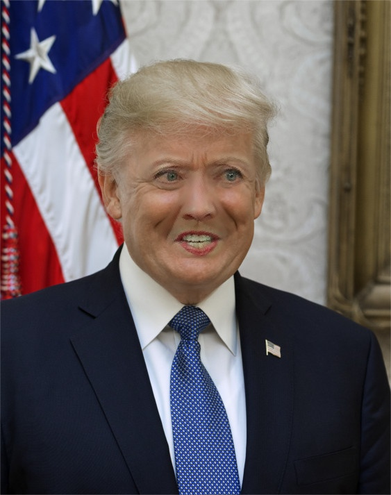

Here we will try to obtain all the neccessary features for face swap using Dlib's model shape_predictor_68_face_landmarks.
Here are our input images :
Let’s look at an code :
# Import neccessary libraries
import cv2
import dlib
import numpy
import sys
# Load shape_predictor_68_face_landmarks model
PREDICTOR_PATH = "shape_predictor_68_face_landmarks.dat"
# Set Scale factor and feather amount
SCALE_FACTOR = 1
FEATHER_AMOUNT = 11
# Define range of feature points according to their feature
FACE_POINTS = list(range(17, 68))
MOUTH_POINTS = list(range(48, 61))
RIGHT_BROW_POINTS = list(range(17, 22))
LEFT_BROW_POINTS = list(range(22, 27))
RIGHT_EYE_POINTS = list(range(36, 42))
LEFT_EYE_POINTS = list(range(42, 48))
NOSE_POINTS = list(range(27, 35))
JAW_POINTS = list(range(0, 17))
# Points used to line up the images.
ALIGN_POINTS = (LEFT_BROW_POINTS + RIGHT_EYE_POINTS + LEFT_EYE_POINTS + RIGHT_BROW_POINTS + NOSE_POINTS + MOUTH_POINTS)
# Points from the second image to overlay on the first. The convex hull of each element will be overlaid.
OVERLAY_POINTS = [ LEFT_EYE_POINTS + RIGHT_EYE_POINTS + LEFT_BROW_POINTS + RIGHT_BROW_POINTS, NOSE_POINTS + MOUTH_POINTS, ]
# Amount of blur to use during colour correction, as a fraction of the pupillary distance.
COLOUR_CORRECT_BLUR_FRAC = 0.6
# Create predictor and detector
detector = dlib.get_frontal_face_detector()
predictor = dlib.shape_predictor( PREDICTOR_PATH)
# Raise Exception when there are too many faces ignore
class TooManyFaces(Exception):
pass
# Raise Exception when there are no faces and ignore
class NoFaces(Exception):
pass
# Obtain facial landmark from the image
def get_landmarks(im):
rects = detector(im, 1)
if len(rects) > 1:
raise TooManyFaces
if len(rects) == 0:
raise NoFaces
return numpy.matrix([[p.x, p.y] for p in predictor(im, rects[0]).parts()])
# This Function will return image with landmarks on the image
def annotate_landmarks(im, landmarks):
im = im.copy()
for idx, point in enumerate(landmarks):
pos = (point[0, 0], point[0, 1])
cv2.putText(im, str(idx), pos, fontFace = cv2.FONT_HERSHEY_SCRIPT_SIMPLEX, fontScale = 0.4, color=(0, 0, 255))
cv2.circle(im, pos, 3, color=(0, 255, 255))
return im
# This function will draw convex hull
def draw_convex_hull(im, points, color):
points = cv2.convexHull(points)
cv2.fillConvexPoly(im, points, color=color)
# Obain face mask of image using landmarks
def get_face_mask(im, landmarks):
im = numpy.zeros(im.shape[:2], dtype=numpy.float64)
for group in OVERLAY_POINTS:
draw_convex_hull(im, landmarks[group],color=1)
im = numpy.array([im, im, im]).transpose((1, 2, 0))
im = (cv2.GaussianBlur(im, (FEATHER_AMOUNT, FEATHER_AMOUNT), 0) > 0) * 1.0
im = cv2.GaussianBlur(im, (FEATHER_AMOUNT, FEATHER_AMOUNT), 0)
return im
# Perform affine transformation and return it.
def transformation_from_points( points1, points2):
"""
Return an affine transformation [s * R | T] such that:
sum ||s*R*p1,i + T - p2,i||^2
is minimized.
"""
# Solve the procrustes problem by subtracting centroids, scaling by the standard deviation, and then using the SVD to calculate the rotation.
# See the following for more details: https://en.wikipedia.org/wiki/Orthogonal_Procrustes_problem
points1 = points1.astype(numpy.float64)
points2 = points2.astype(numpy.float64)
c1 = numpy.mean(points1, axis=0)
c2 = numpy.mean(points2, axis=0)
points1 -= c1
points2 -= c2
s1 = numpy.std(points1)
s2 = numpy.std(points2)
points1 /= s1
points2 /= s2
U, S, Vt = numpy.linalg.svd(points1.T * points2)
# The R we seek is in fact the transpose of the one given by U * Vt. This is because the above formulation assumes the matrix goes on the right (with row vectors) where as our solution requires the matrix to be on the left (with column vectors).
R = (U * Vt).T
return numpy.vstack([ numpy.hstack(((s2 / s1) * R, c2.T - (s2 / s1) * R * c1.T)), numpy.matrix([0., 0., 1.])])
# This function read image and obtain landmark by giving filename as parameter
def read_im_and_landmarks(fname):
im = cv2.imread(fname, cv2.IMREAD_COLOR)
im = cv2.resize(im, (im.shape[1] * SCALE_FACTOR, im.shape[0] * SCALE_FACTOR))
s = get_landmarks(im)
return im, s
# Wrap feature of im with M
def warp_im(im, M, dshape):
output_im = numpy.zeros(dshape, dtype=im.dtype)
cv2.warpAffine(im, M[:2], (dshape[1], dshape[0]), dst=output_im, borderMode= cv2.BORDER_TRANSPARENT, flags= cv2.WARP_INVERSE_MAP)
return output_im
# Adjuct color properly so image will look more real
def correct_colours(im1, im2, landmarks1):
blur_amount = COLOUR_CORRECT_BLUR_FRAC * numpy.linalg.norm( numpy.mean( landmarks1[ LEFT_EYE_POINTS], axis=0) - numpy.mean(landmarks1[ RIGHT_EYE_POINTS], axis=0))
blur_amount = int(blur_amount)
if blur_amount % 2 == 0:
blur_amount += 1
im1_blur = cv2.GaussianBlur(im1, (blur_amount, blur_amount), 0)
im2_blur = cv2.GaussianBlur(im2, (blur_amount, blur_amount), 0)
# Avoid divide-by-zero errors.
im2_blur += (128 * (im2_blur <= 1.0)).astype(im2_blur.dtype)
return (im2.astype(numpy.float64) * im1_blur.astype(numpy.float64) / im2_blur.astype(numpy.float64))
# Enter Filename of 2 pictures.
pic2 = "hillary.jpg"
pic1 = "trump.jpg"
# Obtain landmarks along with image.
im1, landmarks1 = read_im_and_landmarks(pic1)
im2, landmarks2 = read_im_and_landmarks(pic2)
# Normalize points
M = transformation_from_points( landmarks1[ALIGN_POINTS], landmarks2[ALIGN_POINTS])
# Creak mask and wrap features
mask = get_face_mask(im2, landmarks2)
warped_mask = warp_im(mask, M, im1.shape)
combined_mask = numpy.max([get_face_mask(im1, landmarks1), warped_mask],axis=0)
# Apply masking to target image
warped_im2 = warp_im(im2, M, im1.shape)
warped_corrected_im2 = correct_colours(im1, warped_im2, landmarks1)
# Normalize output image
output_im = im1 * (1.0 - combined_mask) + warped_corrected_im2 * combined_mask
# Store and write faceswapped image
cv2.imwrite('faceswap.jpg', output_im)
Our Output image will look like this:
